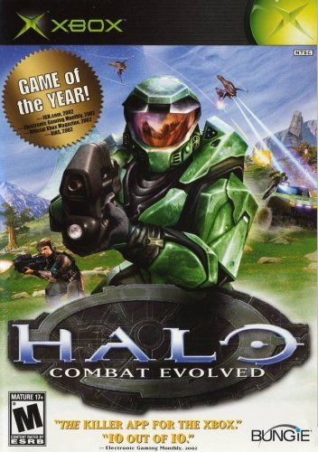
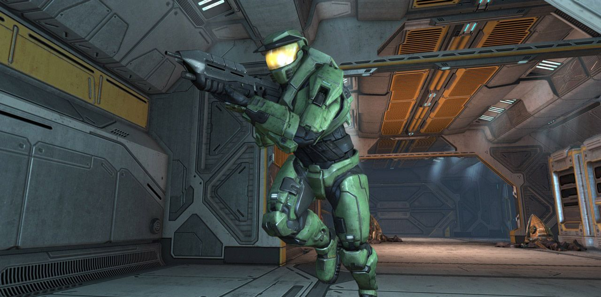

Feburary 17th, 2026
Halo: Combat Evolved is a 2001 first-person shooter game developed by Bungie and published by Microsoft Game Studios. The game was released on November 15 , 2001 for the Xbox, with a Microsoft Windows and Mac OS X port released in 2003, and a downloadable Xbox 360 port released in 2007 as part of Xbox Originals. It is the first installment in the Halo franchise. Set in the 26th century, players assume the role of Master Chief, a cybernetically enhanced supersoldier. Accompanied by an artificial intelligence construct named Cortana and the forces of the United Nations Space Command (UNSC), players battle against an alien theocracy known as the Covenant while they attempt to uncover the secrets of the eponymous Halo, a ring-shaped artificial world. .


The development of what would eventually become Halo began in 1997. Initially, the game was a real-time strategy game that morphed into a third-person shooter before becoming a first-person shooter. Microsoft acquired Bungie in 2000, intending for Halo to be a launch title for the upcoming Xbox, and the game subsequently became a first-person shooter. Despite having a troubled development, Halo introduced multiple new features not previously seen in first-person shooters, many of which became standard in the genre. The game also features a multiplayer component.
Halo was a critical and commercial success and is often cited as one of the greatest video games ever made. Particular acclaim was given for its campaign, graphics, soundtrack, and multiplayer, although minor criticism focused on the campaign's level design. More than six million copies were sold worldwide by November 2005, making it the second best-selling Xbox game and spawning a multimedia franchise.